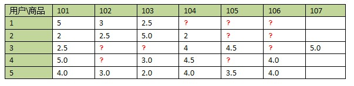

Collaborative Filtering （协同过滤）
Collaborative filtering （协同过滤）
Collaborative filtering （协同过滤）
协作过滤通常用于推荐系统。 这些技术旨在补充用户—商品关联矩阵中所缺失的部分。

spark.ml 目前支持基于模型的协同过滤,其中 users（用户）和 products （商品）被一组可以用来预测缺失项目的潜在因子来描述。
spark.ml 使用 ALS（交替最小二乘法）
来学习这些潜在因子。 spark.ml 中的实现具有以下参数：
- numBlocks是用户和商品将被分区以便并行化计算的块数（默认值为10）。
- rank 是模型中潜在因素的数量（默认为10）。
- maxIter 是要运行的最大迭代次数（默认为10）。
- regParam 指定ALS中的正则化参数（默认为1.0）。
- implicitPrefs 指定是使用 explicit feedback （显式反馈) ALS的版本，还是用适用于
implicit feedback (隐式反馈)数据集的版本（默认值为
false，这意味着使用explicit feedback）。 - alpha 是适用于ALS的隐式反馈变量的参数； 其控制偏好观察中的 baseline 置信度。(默认为1.0)。
- nonnegative 指定是否对最小二乘使用非负约束（默认为
false）。
注意: 基于DataFrame的ALS API目前仅支持user （用户）和 item （商品） ids（项ID）的整数。 user和item id列支持其他数字类型，但id必须在整数值范围内。
Explicit vs. implicit feedback （显式与隐式反馈）
基于矩阵分解的协同过滤的标准方法是将用户-商品关联矩阵中的元素视为用户对商品的explicit preferences （显式偏好），例如用户对电影的评分。
用户对物品或者信息的偏好，根据应用本身的不同，可能包括用户对物品的评分、用户查看物品的记录、用户的购买记录等。其实这些用户的偏好信息可以分为两类： 显式的用户反馈：这类是用户在网站上自然浏览或者使用网站以外，显式地提供反馈信息，例如用户对物品的评分或者对物品的评论。 隐式的用户反馈： 这类是用户在使用网站是产生的数据，隐式地反映了用户对物品的喜好，例如用户购买了某物品，用户查看了某物品的信息，等等。
在现实生活中的许多用例中，通常只能接触到 implicit feedback （隐式的反馈）（例如浏览，点击，购买，喜欢，分享等）。
在spark.ml 中使用基于
隐式反馈数据集的协同过滤的方法来处理这些数据。
这种方法不是直接对数据矩阵进行建模，
而是将数据视为代表用户行为意愿强度的数字（例如点击的次数或某人累积观看电影的时间）。然后，这些数字
与观察到的用户偏好的置信水平相关，而不是给予项目的明确评级。
然后，该模型尝试找到可用于预测用户对项目的预期偏好的潜在因素。
Scaling of the regularization parameter （正则化参数的缩放）
我们通过用户在更新用户因素时产生的评级数或在更新商品因子时收到的产品评级数来缩小正则化参数regParam以解决每个最小二乘问题。
这种方法被命名为 “ALS-WR”并在论文
“Large-Scale Parallel Collaborative Filtering for the Netflix Prize”中进行了讨论。
它使regParam对数据集的规模依赖较少, 因此我们可以将从采样子集学到的最佳参数应用于完整数据集，并期望能有相似的表现。
Cold-start strategy
在使用 ALSModel进行预测时，通常会遇到测试数据集中的用户和/或商品，这些用户和/或商品在训练模型期间不存在。这通常发生在两种情况中：
- 在生产中，对于没有评级历史且未对模型进行过训练的新用户或商品（这是“冷启动问题”）。
- 在交叉验证期间，数据在被拆分为训练集和评估集。
当使用Spark的
CrossValidator或TrainValidationSplit, 中的简单随机拆分时，实际上很常见的是在评估集中遇到不在训练集中的用户和/或商品 默认情况下，
当模型中不存在用户和/或商品因子时，Spark会在 ALSModel.transform期间分配NaN 预测。
这在生产系统中很有用，因为它表示新用户或商品，因此系统可以决定使用某些后备作为预测。
但是，这在交叉验证期间是不合需要的，因为任何NaN预测值都将导致评估指标的NaN结果
（例如，使用RegressionEvaluator时）。这使得模型选择不可能。
Spark 允许用户将coldStartStrategy 参数设置为“drop”，以便删除包含NaN值的预测的DataFrame中的任何行。
然后将根据非NaN数据计算评估度量并且该评估度量将是有效的。以下示例说明了此参数的用法。
注意:目前支持的冷启动策略是“nan” (上面提到的默认行为) 和 “drop”。 将来可能会支持进一步的策略。
示例
在以下示例中，我们从
MovieLens数据集加载评分数据，, each row
每行由用户，电影，评分和时间戳组成。
然后，我们训练一个 ALS 模型，默认情况下假定评分是显式的(implicitPrefs is false).
我们通过测量评级预测的root-mean-square error（均方根误差）来评估推荐模型。
有关API的更多详细信息，请参阅ALS Scala 文档。
import org.apache.spark.ml.evaluation.RegressionEvaluator
import org.apache.spark.ml.recommendation.ALS
case class Rating(userId: Int, movieId: Int, rating: Float, timestamp: Long)
def parseRating(str: String): Rating = {
val fields = str.split("::")
assert(fields.size == 4)
Rating(fields(0).toInt, fields(1).toInt, fields(2).toFloat, fields(3).toLong)
}
val ratings = spark.read.textFile("data/mllib/als/sample_movielens_ratings.txt")
.map(parseRating)
.toDF()
val Array(training, test) = ratings.randomSplit(Array(0.8, 0.2))
// Build the recommendation model using ALS on the training data
val als = new ALS()
.setMaxIter(5)
.setRegParam(0.01)
.setUserCol("userId")
.setItemCol("movieId")
.setRatingCol("rating")
val model = als.fit(training)
// Evaluate the model by computing the RMSE on the test data
// Note we set cold start strategy to 'drop' to ensure we don't get NaN evaluation metrics
model.setColdStartStrategy("drop")
val predictions = model.transform(test)
val evaluator = new RegressionEvaluator()
.setMetricName("rmse")
.setLabelCol("rating")
.setPredictionCol("prediction")
val rmse = evaluator.evaluate(predictions)
println(s"Root-mean-square error = $rmse")
// Generate top 10 movie recommendations for each user
val userRecs = model.recommendForAllUsers(10)
// Generate top 10 user recommendations for each movie
val movieRecs = model.recommendForAllItems(10)
// Generate top 10 movie recommendations for a specified set of users
val users = ratings.select(als.getUserCol).distinct().limit(3)
val userSubsetRecs = model.recommendForUserSubset(users, 10)
// Generate top 10 user recommendations for a specified set of movies
val movies = ratings.select(als.getItemCol).distinct().limit(3)
val movieSubSetRecs = model.recommendForItemSubset(movies, 10)
如果评分矩阵是来自于另一个信息来源（即从其他信号推断出来），您可以将
设置为 implicitPrefs 为true 以获得更好的结果
val als = new ALS()
.setMaxIter(5)
.setRegParam(0.01)
.setImplicitPrefs(true)
.setUserCol("userId")
.setItemCol("movieId")
.setRatingCol("rating")In the following example, we load ratings data from the
MovieLens dataset, each row
consisting of a user, a movie, a rating and a timestamp.
We then train an ALS model which assumes, by default, that the ratings are
explicit (implicitPrefs is false).
We evaluate the recommendation model by measuring the root-mean-square error of
rating prediction.
Refer to the ALS Java docs
for more details on the API.
import java.io.Serializable;
import org.apache.spark.api.java.JavaRDD;
import org.apache.spark.ml.evaluation.RegressionEvaluator;
import org.apache.spark.ml.recommendation.ALS;
import org.apache.spark.ml.recommendation.ALSModel;
public static class Rating implements Serializable {
private int userId;
private int movieId;
private float rating;
private long timestamp;
public Rating() {}
public Rating(int userId, int movieId, float rating, long timestamp) {
this.userId = userId;
this.movieId = movieId;
this.rating = rating;
this.timestamp = timestamp;
}
public int getUserId() {
return userId;
}
public int getMovieId() {
return movieId;
}
public float getRating() {
return rating;
}
public long getTimestamp() {
return timestamp;
}
public static Rating parseRating(String str) {
String[] fields = str.split("::");
if (fields.length != 4) {
throw new IllegalArgumentException("Each line must contain 4 fields");
}
int userId = Integer.parseInt(fields[0]);
int movieId = Integer.parseInt(fields[1]);
float rating = Float.parseFloat(fields[2]);
long timestamp = Long.parseLong(fields[3]);
return new Rating(userId, movieId, rating, timestamp);
}
}
JavaRDD<Rating> ratingsRDD = spark
.read().textFile("data/mllib/als/sample_movielens_ratings.txt").javaRDD()
.map(Rating::parseRating);
Dataset<Row> ratings = spark.createDataFrame(ratingsRDD, Rating.class);
Dataset<Row>[] splits = ratings.randomSplit(new double[]{0.8, 0.2});
Dataset<Row> training = splits[0];
Dataset<Row> test = splits[1];
// Build the recommendation model using ALS on the training data
ALS als = new ALS()
.setMaxIter(5)
.setRegParam(0.01)
.setUserCol("userId")
.setItemCol("movieId")
.setRatingCol("rating");
ALSModel model = als.fit(training);
// Evaluate the model by computing the RMSE on the test data
// Note we set cold start strategy to 'drop' to ensure we don't get NaN evaluation metrics
model.setColdStartStrategy("drop");
Dataset<Row> predictions = model.transform(test);
RegressionEvaluator evaluator = new RegressionEvaluator()
.setMetricName("rmse")
.setLabelCol("rating")
.setPredictionCol("prediction");
Double rmse = evaluator.evaluate(predictions);
System.out.println("Root-mean-square error = " + rmse);
// Generate top 10 movie recommendations for each user
Dataset<Row> userRecs = model.recommendForAllUsers(10);
// Generate top 10 user recommendations for each movie
Dataset<Row> movieRecs = model.recommendForAllItems(10);
// Generate top 10 movie recommendations for a specified set of users
Dataset<Row> users = ratings.select(als.getUserCol()).distinct().limit(3);
Dataset<Row> userSubsetRecs = model.recommendForUserSubset(users, 10);
// Generate top 10 user recommendations for a specified set of movies
Dataset<Row> movies = ratings.select(als.getItemCol()).distinct().limit(3);
Dataset<Row> movieSubSetRecs = model.recommendForItemSubset(movies, 10);
If the rating matrix is derived from another source of information (i.e. it is
inferred from other signals), you can set implicitPrefs to true to get
better results:
ALS als = new ALS()
.setMaxIter(5)
.setRegParam(0.01)
.setImplicitPrefs(true)
.setUserCol("userId")
.setItemCol("movieId")
.setRatingCol("rating");In the following example, we load ratings data from the
MovieLens dataset, each row
consisting of a user, a movie, a rating and a timestamp.
We then train an ALS model which assumes, by default, that the ratings are
explicit (implicitPrefs is False).
We evaluate the recommendation model by measuring the root-mean-square error of
rating prediction.
Refer to the ALS Python docs
for more details on the API.
from pyspark.ml.evaluation import RegressionEvaluator
from pyspark.ml.recommendation import ALS
from pyspark.sql import Row
lines = spark.read.text("data/mllib/als/sample_movielens_ratings.txt").rdd
parts = lines.map(lambda row: row.value.split("::"))
ratingsRDD = parts.map(lambda p: Row(userId=int(p[0]), movieId=int(p[1]),
rating=float(p[2]), timestamp=long(p[3])))
ratings = spark.createDataFrame(ratingsRDD)
(training, test) = ratings.randomSplit([0.8, 0.2])
# Build the recommendation model using ALS on the training data
# Note we set cold start strategy to 'drop' to ensure we don't get NaN evaluation metrics
als = ALS(maxIter=5, regParam=0.01, userCol="userId", itemCol="movieId", ratingCol="rating",
coldStartStrategy="drop")
model = als.fit(training)
# Evaluate the model by computing the RMSE on the test data
predictions = model.transform(test)
evaluator = RegressionEvaluator(metricName="rmse", labelCol="rating",
predictionCol="prediction")
rmse = evaluator.evaluate(predictions)
print("Root-mean-square error = " + str(rmse))
# Generate top 10 movie recommendations for each user
userRecs = model.recommendForAllUsers(10)
# Generate top 10 user recommendations for each movie
movieRecs = model.recommendForAllItems(10)
# Generate top 10 movie recommendations for a specified set of users
users = ratings.select(als.getUserCol()).distinct().limit(3)
userSubsetRecs = model.recommendForUserSubset(users, 10)
# Generate top 10 user recommendations for a specified set of movies
movies = ratings.select(als.getItemCol()).distinct().limit(3)
movieSubSetRecs = model.recommendForItemSubset(movies, 10)
If the rating matrix is derived from another source of information (i.e. it is
inferred from other signals), you can set implicitPrefs to True to get
better results:
als = ALS(maxIter=5, regParam=0.01, implicitPrefs=True,
userCol="userId", itemCol="movieId", ratingCol="rating")Refer to the R API docs for more details.
# Load training data
data <- list(list(0, 0, 4.0), list(0, 1, 2.0), list(1, 1, 3.0),
list(1, 2, 4.0), list(2, 1, 1.0), list(2, 2, 5.0))
df <- createDataFrame(data, c("userId", "movieId", "rating"))
training <- df
test <- df
# Fit a recommendation model using ALS with spark.als
model <- spark.als(training, maxIter = 5, regParam = 0.01, userCol = "userId",
itemCol = "movieId", ratingCol = "rating")
# Model summary
summary(model)
# Prediction
predictions <- predict(model, test)
head(predictions)